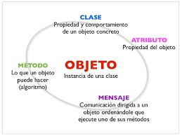
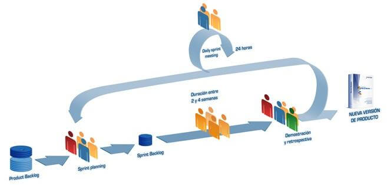

Your browser doesn't support the features required by impress.js, so you are presented with a simplified version of this presentation.
For the best experience please use the latest Chrome, Safari or Firefox browser.
Programacion Orientada a Obejetos

Es un paradigma de programación que viene a innovar la forma de obtener resultados. Los objetos manipulan los datos de entrada para la obtención de datos de salida específicos, donde cada objeto ofrece una funcionalidad especial
La programación orientada a objetos es una forma de programar que trata de encontrar una solución a estos problemas. Introduce nuevos conceptos, que superan y amplían conceptos antiguos ya conocidos. Entre ellos destacan los siguientes:
- Clase
- Herencia
- Objeto
- Método
- Propiedad o atributo
Caracteristicas de la Programacion Orientada a Objetos
- Abstracción
- Encapsulamiento
- Principio de ocultación
- Polimorfismo
- Herencia
Metodologia Scrum
Scrum es una metodología ágil y flexible para gestionar el desarrollo de software, cuyo principal objetivo es maximizar el retorno de la inversión para su empresa

Esta metódologia de trabajo promueve la innovación, motivación y compromiso del equipo que forma parte del proyecto, por lo que los profesionales encuentran un ámbito propicio para desarrollar sus capacidades.
Extreme Programming
Es una metodología de desarrollo de software ágil que tiene como objetivo producir software de mayor calidad y mayor calidad de vida para el equipo de desarrollo. XP es el marco ágil más específico en relación con las prácticas de ingeniería adecuadas para el desarrollo de software.
Algunas de las Caracteristicas de esta metodología
- Cambios dinámicos en los requisitos del software.
- Riesgos causados por proyectos de tiempo fijo utilizando nueva tecnología.
- Equipo de desarrollo ampliado
- La tecnología que está utilizando permite realizar pruebas funcionales y de unidades automatizadas.
Evolucion de los paradigmas de
Programacion
Programación Funcional
Es un paradigma de programacion donde toda computacion es el resultado de evaluar una funcion matematica.
Enfatiza la evaluacion de las expresiones, no la ejecucion de instrucciones
Programación Estructurada
Mejora la claridad, calidad y tiempo de desarrollo
Programación estructurada
A finales de los años 1970 surgió una nueva forma de programar que no solamente permitía desarrollar programas fiables y eficientes, sino que además estos estaban escritos de manera que se facilitaba su comprensión en fases de mejora posteriores.
La programación modular surge como un remedio a esta situación. A menudo se aplica el término módulo a un conjunto de procedimientos afines junto con los datos que manipulan. Así, el paradigma de la programación modular consiste en:
- Establecer los módulos que se requieren para la resolución de un problema.
- Dividir el programa de modo que los procedimientos y los datos queden ocultos en módulos.
Tambien es conocida como el principio de ocultacion de procedimientos y datos